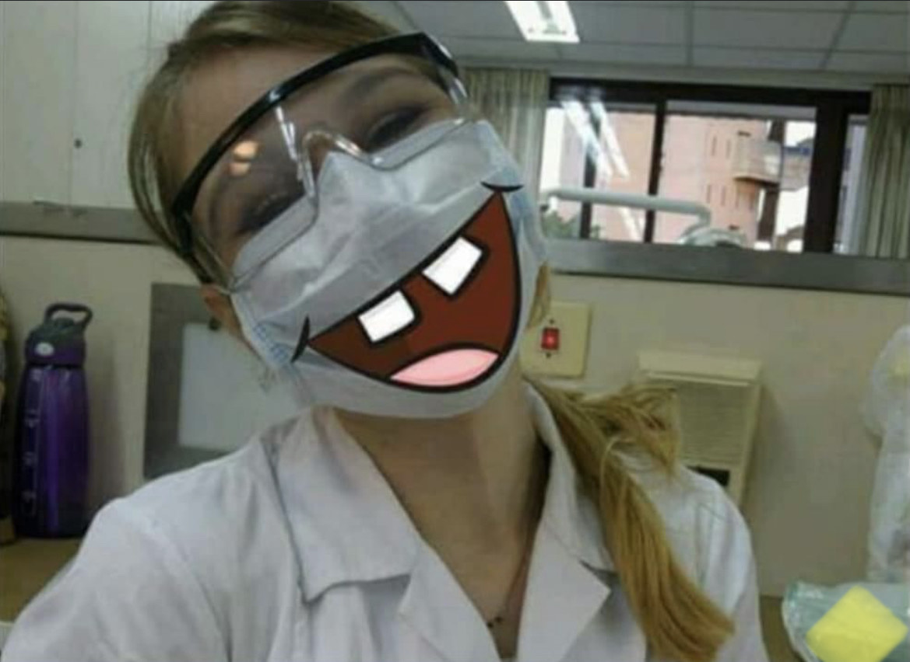
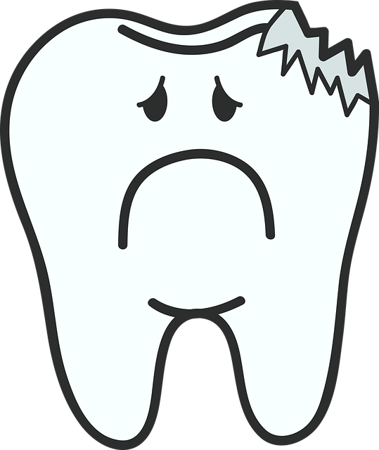
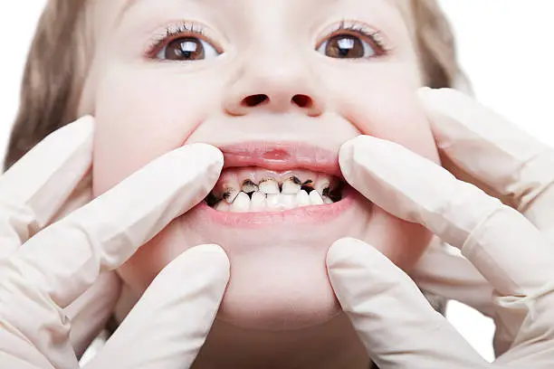
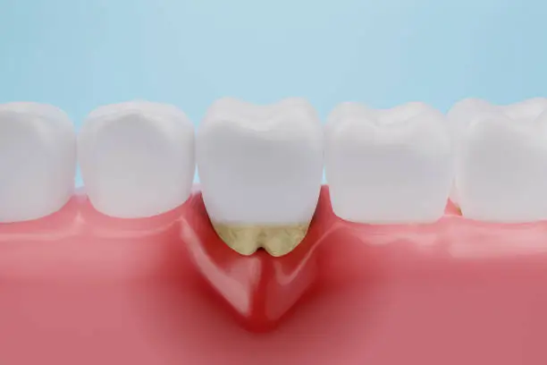
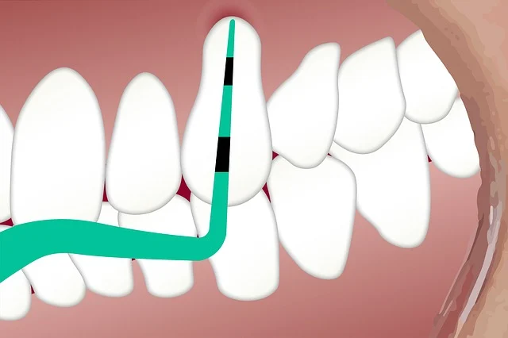
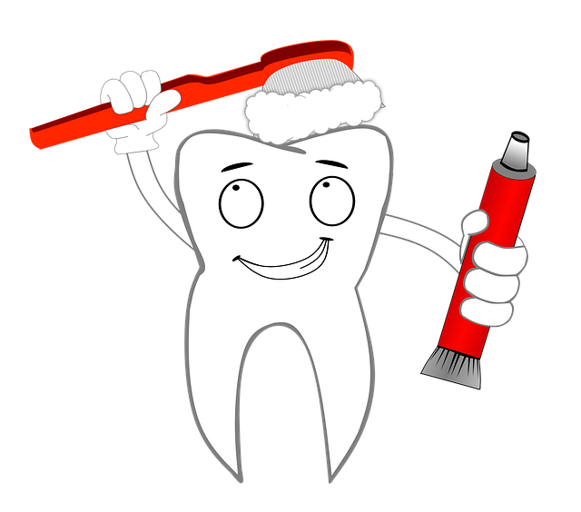

קצת עליי |
החתולים שלי |
תחביבים |
מחלות דנטליות נפוצות |
טיפים לשמירה על בריאות הפה
ק
צ
ת
ע
ל
י
י

נעים להכיר, אני מרינה קופרינץ,
גרה באריאל, שיננית, אוהבת ספרים, אקרובטיקה אווירית, אפייה ,סריגה וחתולים.
מאחר ואני כבר לא עובדת בתור שיננית אני יותר ויותר דואגת לבריאות הפה שלכם, לכן האתר יהיה ברובו על הנושא הזה
אבל אני יותר ממבינה אם תחליטו לדלג על הנושא ולצפות בחתולים אתם יותר ממוזמנים.
בריאות הפה
מחלות דנטליות נפוצות
-עששת
עששת היא אחת המחלות הנפוצות ביותר בעולם. היא נגרמת כתוצאה מחומצה המופרשת מחילוף החומרים של החיידקים הנמצאים על משטחי השן ,
החומצה גורמות לדה מינרליזציה של השן- המסת חומרים כמו סידן שמביאה להרס של השן.
אם העששת עמוקה צריך יהיה לפנות לרופא שיניים לבצע שחזור (סתימה) ואף טיפול שורש או עקירה.
תחילה התהליך הוא הפיך וניתן יהיה לעצור אותו על ידי רה מינרליזציה – החזרת החומרים לשן על ידי הפלואוריד .
אם העששת עמוקה צריך יהיה לפנות לרופא שיניים לבצע שחזור (סתימה) ואף טיפול שורש או עקירה.

עששת דוהרת-
נקראת גם עששת הבקבוק – היא עששת המתפתחת באופן מהיר אצל ילדים צעירים.
נגמרת ע"י חשיפה ממושכת למאכלים ומשקאות המכילים סוכר, כולל חלב אם ותחליפיו.
זרימת הרוק בשעות הלילה מופחתת ולכן שאריות האכול לא נשטפות וניתן לראות עששת מפושטת כמעט בכל חלקי הפה,
לכן מומלץ למנוע מילדים שינה עם בקבוקים.

דלקת חנייכים-
דלקת חנייכים היא תהליך הפיך בהן החנייכים נפוחות,אדומות רגישות ומדממות. הדלקת נגרמת בגלל הרובד החיידקי ו/או האבנית הנמצאים על השן .
ניתן לטפל בדלקת ע"י טיפול אצל שיננית שמירה על הגיינה אוראלית וניתן גם להשתמש במשחת שיניים לחניכיים מודלקות.

פריודונטיטיס-
במידה ולא מטפלים בדלקת החניכיים היא יכולה לגרום לפריודונטיטיס – מצב שבו לא רק החנייכים רגישות ונפוחות אלה גם נפגעת העצם התומכת בשן .
ככל שיעבור הזמן והמחלה לא תטופל, המצב יחמיר עד כדי איבוד שיניים.
הטיפול כולל גם הגעה לשיננית, הדרכה להגיינה אוראלית, וטיפול אצל רופא שיניים.

נסיגת חנייכים-
תהליך בו החנייכים זזות מטה מקומן הקבוע, יחד עם החנייכים גם עצם השן נספגת , תהליך היכול לגרום לאובדן השיניים. הנסיגה יכולה לנבוע בגלל –
1.אבנית – האבנית נוצרת מרובד השן שבעזרת הרוק הסתיידה עד לאבן , במצב כזה צריך להגיע לשיננית לניקוי האבנית והדרכה לצחצוח עדין.
2.צחצוח אגרסיבי – מניעה רק ע"י הדרכת המטופל לצחצוח נכון ועדין.
במידה והתהליך כבר התחיל לא ניתן להחזיר את החנייכים למצב הקודם אלא רק למנוע את התפשטות הנסיגה.
בנוסף נסיגת חנייכים חושפת את הדנטין של השן שהוא רגיש יותר ויכול לגרום לרגישות בשיניים, ניתן לטפל ע"י שימוש במשחת שיניים לשיניים רגישות .
מכיוון שהדנטין הוא רך יותר מהאימייל השן באזור זה תיהיה יותר רגישה לעששת ולכן מומלץ לצחצח עם משחה המכילה פלואוריד, והנחת פלואוריד פעם בשנה אצל שיננית.
טיפים לשמירה על בריאות הפה


שטיפת הפה לאחר כל ארוחה או לעיסת מסטיק/סוכריה ללא סוכר למשך של 5 דק.
שימוש במשחה המכילה פלואוריד
ביקורת אצל רופא שיניים פעם בשנה ושיננית פעם בחצי שנה
חזרה לראש הדף